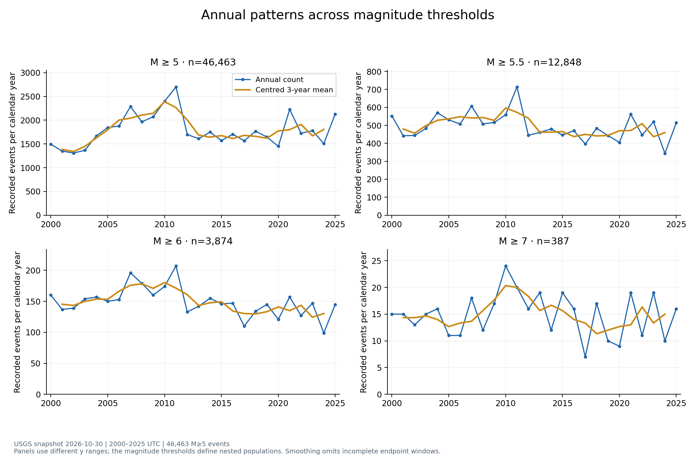
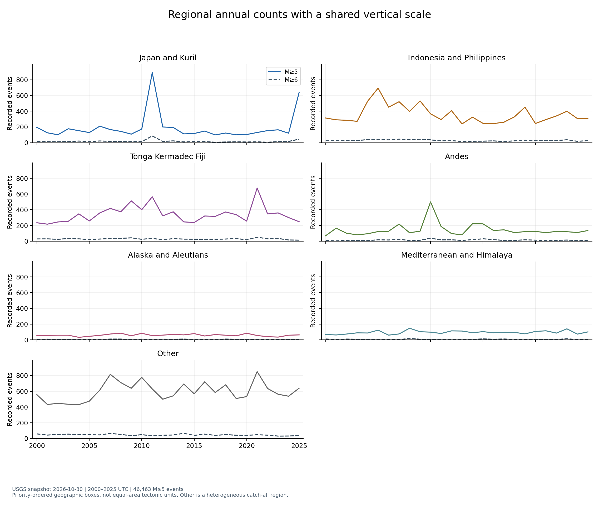
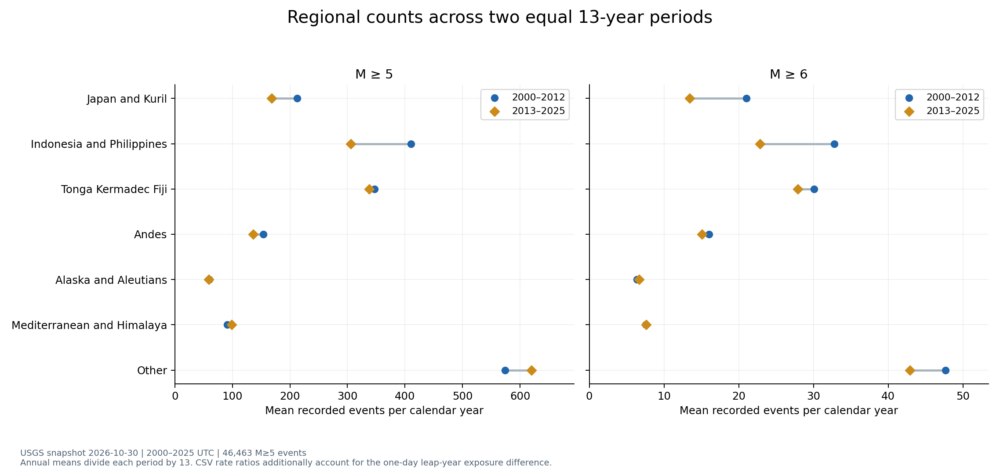
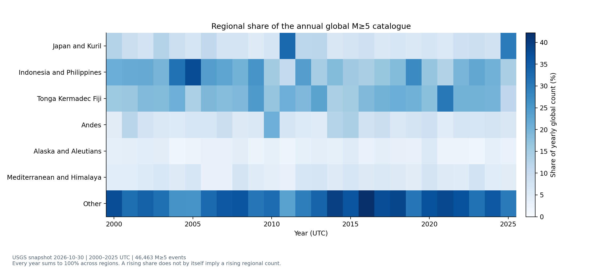
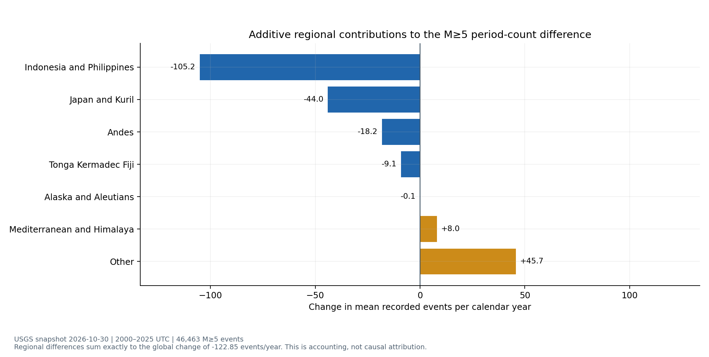
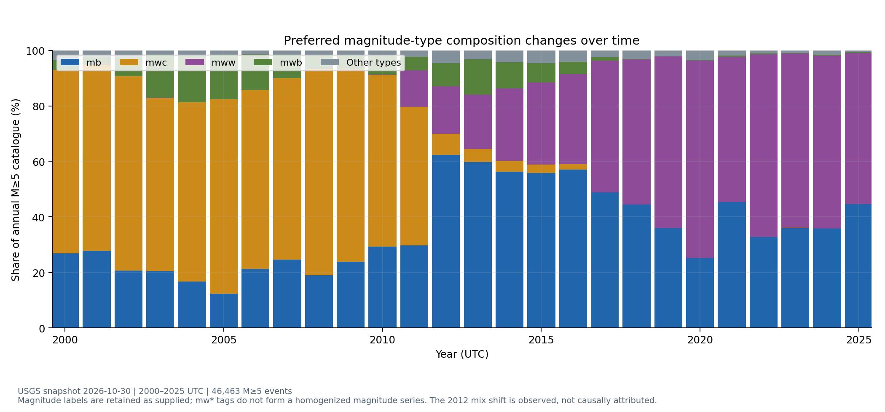
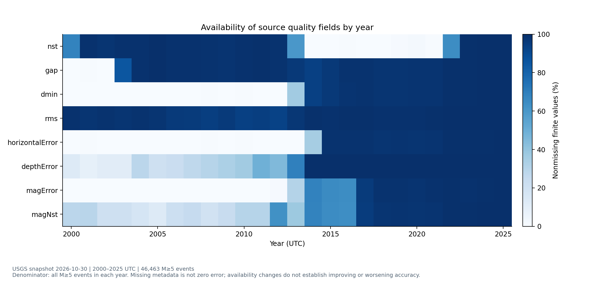
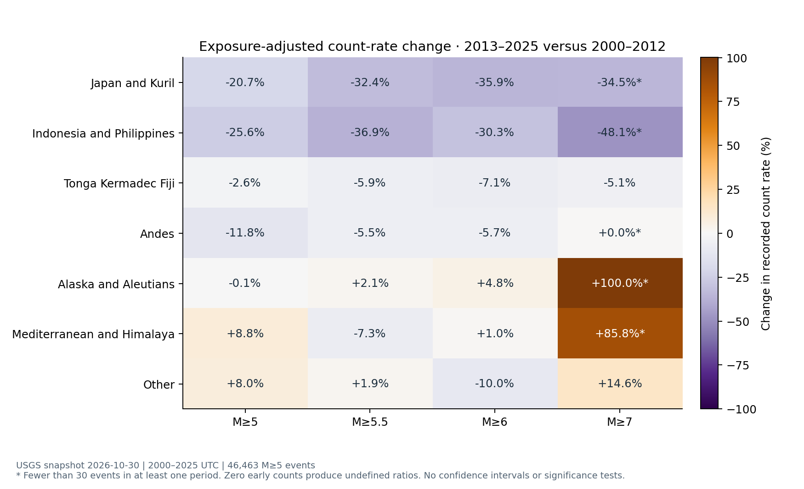
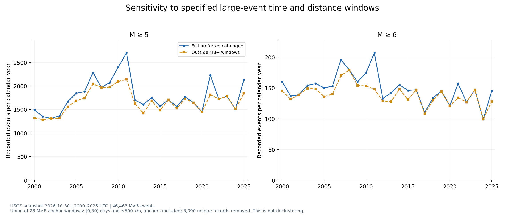

What changed
The fixed USGS snapshot contains 46,463 M≥5 events across 2000–2025. Comparing 2000–2012 with 2013–2025, the exposure-adjusted recorded rate changes by -6.63% at M≥5 and -15.42% at M≥6. Regional changes differ. The M≥5 whole-window Sen slope is positive, while the equal-period count comparison is negative; this window dependence does not support a simple monotonic-increase description.
Scope and exposure can be matched, but measurement composition and metadata reporting are not constant. Uniform detection completeness and comparable physical hazard are not established. Existing baseline data and all 30 baseline deliverables remain byte-identical; this extension uses a separate version directory.
中文结论
后十三年的记录率低于前十三年，但不同震级门槛和地区的变化幅度不同。全期斜率与两段均值比较也给出不同方向，说明“持续上升”或“持续下降”都过于简单。2012 年附近震级类型构成发生明显变化，深度取值集中现象及误差字段缺失率也随时间变化；这些记录口径差异限制了物理解释。新增图表反映固定目录中的观测变化，不证明真实地震活动或灾害风险的因果变化。
Annual patterns depend on the chosen threshold and window
| Threshold | Early N | Late N | Early mean/year | Late mean/year | Rate change % | Sen slope events/year/year |
|---|---|---|---|---|---|---|
| M≥5 | 24030 | 22433 | 1848.46 | 1725.62 | -6.63 | +7.833 |
| M≥5.5 | 6877 | 5971 | 529.00 | 459.31 | -13.16 | -3.200 |
| M≥6 | 2099 | 1775 | 161.46 | 136.54 | -15.42 | -0.938 |
| M≥7 | 203 | 184 | 15.62 | 14.15 | -9.34 | +0.000 |
The M≥5 maximum is 2,701 events in 2011; the minimum is 1,309 in 2002. The full-window Sen slope is +7.83 events per calendar year per elapsed year. Omitting one calendar year at a time gives slopes from +3.90 to +12.61; this is a sensitivity range, not a confidence interval. At M≥5.5 and M≥6 the full-window slopes are negative, and at M≥7 the median pairwise slope is zero.
These summaries describe different aspects of a fluctuating series. The 2010–2011 peak affects the early-half average; start/end values, robust slopes and period means need not agree. No p-value is used to convert any of them into a claim about global underlying seismicity.

Multi-year context
| Period | Calendar years | Events | Mean events/calendar year |
|---|---|---|---|
| 2000–2004 | 5 | 7188 | 1437.60 |
| 2005–2009 | 5 | 10046 | 2009.20 |
| 2010–2014 | 5 | 10155 | 2031.00 |
| 2015–2019 | 5 | 8256 | 1651.20 |
| 2020–2025 | 6 | 10818 | 1803.00 |
The last block spans six years, so compare annual means or day-adjusted rates rather than unscaled block totals. Slopes and omitted-year ranges · all regional block statistics.
Regions change differently
| Region | Early N | Late N | Early mean/year | Late mean/year | Rate change % | Share change pp |
|---|---|---|---|---|---|---|
| Japan and Kuril | 2763 | 2191 | 212.54 | 168.54 | -20.69 | -1.73 |
| Indonesia and Philippines | 5340 | 3973 | 410.77 | 305.62 | -25.58 | -4.51 |
| Tonga Kermadec Fiji | 4511 | 4393 | 347.00 | 337.92 | -2.60 | +0.81 |
| Andes | 2003 | 1766 | 154.08 | 135.85 | -11.81 | -0.46 |
| Alaska and Aleutians | 774 | 773 | 59.54 | 59.46 | -0.11 | +0.22 |
| Mediterranean and Himalaya | 1182 | 1286 | 90.92 | 98.92 | +8.82 | +0.81 |
| Other | 7457 | 8051 | 573.62 | 619.31 | +7.99 | +4.86 |
The strongest M≥5 recorded-rate decline among the named boxes is in Indonesia and Philippines (-25.58%). Mediterranean and Himalaya increases by +8.82%. Other increases too, but it aggregates all locations outside the named boxes and has no single tectonic interpretation. A change in a region's global share is a composition change, not an area-normalized activity rate.




Results retain identical geographic definitions in both periods. The ±2-degree box sensitivity quantifies dependence on that choice without claiming invariance. Tables: annual counts/shares · period counts/rates.
What is comparable and what remains uncertain
| Aspect | Evidence | Interpretation |
|---|---|---|
| Population and extraction | 46,463 unique retained IDs; 26 annual batches; 0 zero-count calendar months | Complete requested time partitions; this does not establish detection completeness. |
| Exposure | 2000–2012: 4,749 days; 2013–2025: 4,748 days | Use full-year counts and exact-day-adjusted rate comparisons. |
| Magnitude measurement | Preferred magnitude-type composition changes | Stratify thresholds and retain types; no magnitude homogenization is assumed. |
| Depth measurement | Concentrations at 10/33 km and error reporting differ | Treat these as reporting diagnostics; individual fixed-depth status is not supplied. |
| Metadata availability | Quality fields have substantial temporal missingness differences | Never substitute zero for missing errors or interpret coverage as accuracy. |
| Sequence dependence | 3,090 records in the union of 28 specified M≥8 windows | Naive independent-event Poisson errors and causal claims are avoided. |
| Detection completeness | The extraction contains no events below M5 | A uniform completeness magnitude cannot be established from this truncated sample. |
| Regional definitions | Same priority-ordered boxes in all years; ±2° sensitivity saved | Boxes differ in area; Other is a heterogeneous catch-all. |
Measurement and reporting differences
| Diagnostic | Early period | Late period |
|---|---|---|
| Preferred magnitude tag starts mw | 73.45% | 55.05% |
| Depth exactly 10 km | 27.94% | 41.01% |
| Depth exactly 33 km | 9.22% | 0.11% |
| Horizontal-error field available | 0.28% | 86.80% |
| Depth-error field available | 28.01% | 97.76% |
| Magnitude-error field available | 0.21% | 86.45% |
| Station-count field available | 97.00% | 33.64% |
| Automatic review status | 0.30% | 0.00% |
The share of preferred magnitude tags beginning with mw falls from 73.45% to 55.05%. On an annual basis it changes from 69.94% in 2011 to 37.34% in 2012. This observed mix change is not attributed to a specific policy or network change without supporting evidence. Different magnitude methods have different applicable ranges and may saturate; filtering to mw* tags changes the selection as well as the measurement mix. It is not a homogenization procedure. See USGS magnitude-type definitions.
Depth exactly 10 km rises from 27.94% to 41.01%, while exact 33 km becomes less common. USGS explains that fixed depth values can be assigned when depth is poorly constrained. Exact equality alone cannot identify which individual events were fixed. All such observations remain in the data. See USGS depth-reporting explanation.
Early error-field availability is especially low. Missing uncertainty metadata cannot be read as zero uncertainty, and improved field population alone does not prove better event measurement. The audit retains missingness separately from validity. Network codes are also tabulated by year in annual_network_mix.csv; the contributing network is not a direct count of operational stations.


USGS notes that reporting/detection and natural clustering can change catalogue counts. This general caution does not identify the cause of this project's specific differences. The saved snapshot avoids mixing downloads across this analysis, while future catalogue revisions can still change results. No lower-magnitude sample, completeness model, uniform remeasurement or independent reference catalogue is available here, so equal detection completeness remains unresolved. Annual/regional metadata profile · period diagnostics · 312-month coverage check.
Threshold and sequence sensitivity

Raising the threshold does not reverse the global equal-period decline, but it changes its size. Small regional counts are flagged because ratios can be unstable. Reviewed-only M≥5 selection gives -6.34%; mw-prefix selection gives -30.01%, which is strongly exposed to the changing availability of those preferred types.
The specified-window diagnostic finds 28 M≥8 anchors and removes 3,090 unique events, leaving 43,373. It includes anchors, respects date-line geometry, counts overlapping windows only once, and has 0 windows extending beyond the study. The M≥5 period comparison becomes -3.37%. This demonstrates sensitivity to selected clusters; it does not identify aftershocks or produce independent background events.

All regional/threshold selection comparisons · window-removal annual series. The 30-day and 500-km choices are descriptive checks, not a physical rupture model or universal declustering rule.
Definitions and reproducibility
The event unit is a unique preferred USGS earthquake ID. Dates use UTC. Annual grids include all 26 years and every configured region, with explicit zeros. Thresholds are M≥5, 5.5, 6 and 7. Magnitude values and types are not converted. Geographic boxes and priority order are identical to the baseline. Regional shares divide by the same year's global count at the same threshold.
Count per calendar year is the observed annual count; period annual means divide by the number of full calendar years. Exposure-standardized rates multiply counts by 365.2425/exposure-days. Rate ratios divide late by early exposure-standardized rates; zero early counts yield an undefined ratio. The Sen slope is the median of all distinct-year pairwise slopes. Omitted-year ranges are sensitivity diagnostics, not sampling intervals. Sequence windows use [anchor time, anchor time+30 days) and spherical epicentral distance ≤500 km on the same radius as the baseline.
Run python run_temporal_analysis.py after building the baseline, then python verify_temporal_analysis.py and python -m pytest -q. Use --publish to prepare the aggregate report, figures, tables and interactive tool under docs/temporal_regional_v2. Event-level inputs and window membership stay local. Baseline input/output hashes are checked before and after the extension. Dataset SHA256: 231b5b4fadf2d0d4eccfe4f03b8eb8489d225ff84e921f18d2b973af46d544ff. Source extraction dates: 2026-10-30.
Sources
- USGS catalogue API
- USGS catalogue fluctuations and detection
- USGS magnitude types
- USGS depth reporting
- USGS magnitude revisions
- USGS source CSV fields
Official documentation was checked on 3 November 2026. It supplies interpretation limits; all reported project statistics are computed from the saved 30 October catalogue snapshot. This report makes no causal, prediction or uniform-completeness claim.